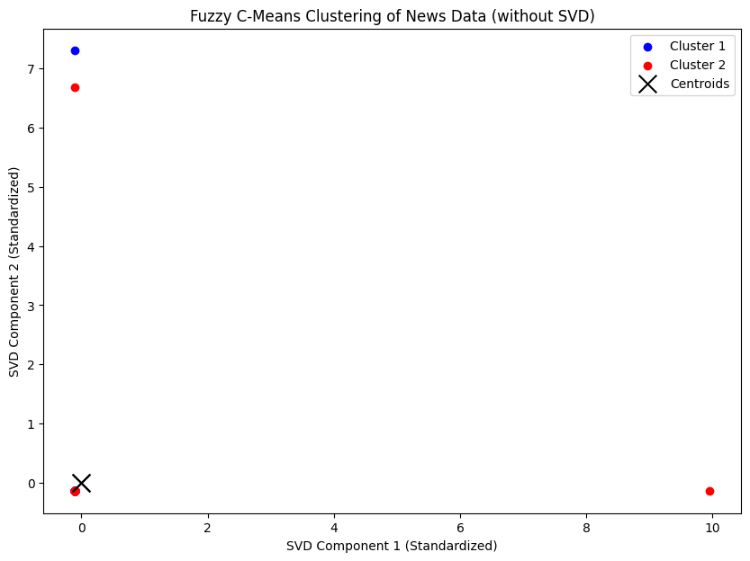
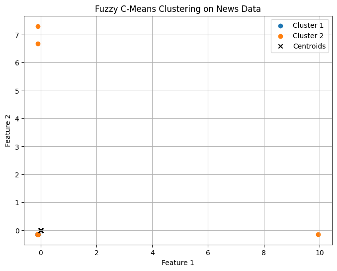
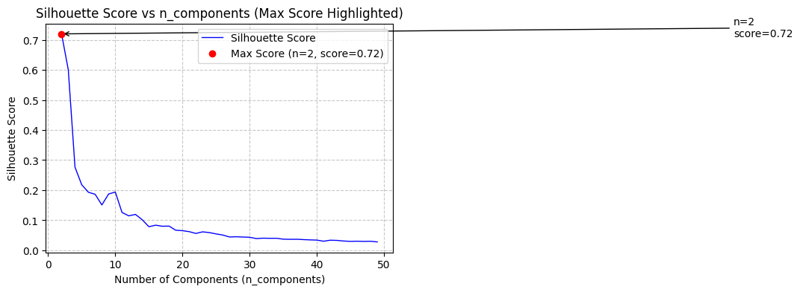
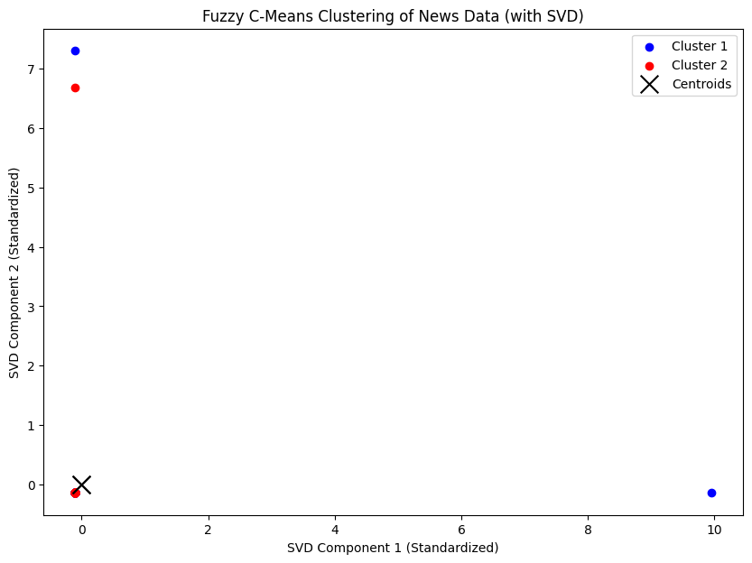
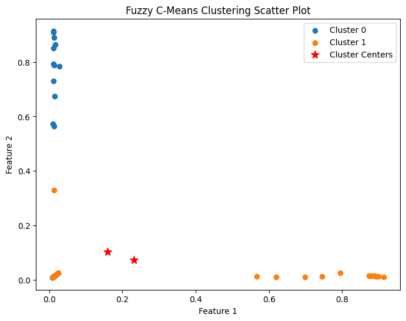

Nama : Achmad Baharuddin Akbar
NIM : 210411100001
Test fuzzy c-means 1#
from google.colab import drive
drive.mount('/content/drive')
Drive already mounted at /content/drive; to attempt to forcibly remount, call drive.mount("/content/drive", force_remount=True).
import pandas as pd
df = pd.read_csv("/content/drive/My Drive/PPW-A/report/tugas-ppw/hasil_preprocesing.csv")
df.head()
| judul | tanggal | isi | kategori | cleansing | case_folding | tokenize | Filtering/stopword removal | |
|---|---|---|---|---|---|---|---|---|
| 0 | Awas! Kebiasaan Sepele Ini 26 Persen Lebih Tin... | Rabu, 27 Nov 2024 19:02 WIB | Jakarta - Stroke merupakan salah satu kondisi ... | Kesehatan | Jakarta Stroke merupakan salah satu kondisi m... | jakarta stroke merupakan salah satu kondisi m... | ['jakarta', 'stroke', 'merupakan', 'salah', 's... | jakarta stroke salah kondisi medis menurunkan ... |
| 1 | Berlebihan Makan Petai Bisa Picu Ginjal Rusak,... | Rabu, 27 Nov 2024 18:02 WIB | Jakarta - Petai atau parkia speciosa merupakan... | Kesehatan | Jakarta Petai atau parkia speciosa merupakan ... | jakarta petai atau parkia speciosa merupakan ... | ['jakarta', 'petai', 'atau', 'parkia', 'specio... | jakarta petai parkia speciosa tanaman asia ten... |
| 2 | Pria Tertua di Dunia Meninggal di Usia 112, Su... | Rabu, 27 Nov 2024 16:52 WIB | Jakarta - Pria yang dinobatkan sebagai orang t... | Kesehatan | Jakarta Pria yang dinobatkan sebagai orang te... | jakarta pria yang dinobatkan sebagai orang te... | ['jakarta', 'pria', 'yang', 'dinobatkan', 'seb... | jakarta pria dinobatkan orang tertua dunia ver... |
| 3 | Gejala Wasir (Ambeien), Penyebab, dan Cara Men... | Rabu, 27 Nov 2024 16:47 WIB | Jakarta - Wasir sama dengan ambeien. Keduanya ... | Kesehatan | Jakarta Wasir sama dengan ambeien Keduanya me... | jakarta wasir sama dengan ambeien keduanya me... | ['jakarta', 'wasir', 'sama', 'dengan', 'ambeie... | jakarta wasir ambeien nama penyakit hemoroid p... |
| 4 | Jangan Abaikan Kelelahan, Catat Tips Biar Petu... | Rabu, 27 Nov 2024 16:03 WIB | Jakarta - Kelompok Penyelenggara Pemungutan Su... | Kesehatan | Jakarta Kelompok Penyelenggara Pemungutan Sua... | jakarta kelompok penyelenggara pemungutan sua... | ['jakarta', 'kelompok', 'penyelenggara', 'pemu... | jakarta kelompok penyelenggara pemungutan suar... |
!pip install scikit-fuzzy
# Import libraries yang diperlukan
import pandas as pd
import numpy as np
import matplotlib.pyplot as plt
import skfuzzy as fuzz
from sklearn.feature_extraction.text import TfidfVectorizer
from sklearn.preprocessing import StandardScaler
Requirement already satisfied: scikit-fuzzy in /usr/local/lib/python3.10/dist-packages (0.5.0)
texts = df['Filtering/stopword removal']
# Preprocessing: TF-IDF
tfidf = TfidfVectorizer()
tfidf_matrix = tfidf.fit_transform(texts)
tfidf_array = tfidf_matrix.toarray()
# Normalisasi fitur
scaler = StandardScaler()
X_scaled = scaler.fit_transform(tfidf_array)
n_clusters = 2 # Jumlah cluster yang diinginkan
cntr, u, _, _, _, _, _ = fuzz.cluster.cmeans(
X_scaled.T, c=n_clusters, m=2, error=0.001, maxiter=1000, init=None
)
# Menentukan cluster untuk setiap data berdasarkan keanggotaan tertinggi
cluster_labels = np.argmax(u, axis=0)
# Visualisasi hasil klasterisasi
plt.figure(figsize=(10, 7))
colors = ['b', 'r']
for i in range(n_clusters):
plt.scatter(X_scaled[cluster_labels == i, 0], X_scaled[cluster_labels == i, 1],
color=colors[i], label=f'Cluster {i+1}')
# Menampilkan pusat cluster
plt.scatter(cntr[:, 0], cntr[:, 1], marker='x', s=200, color='k', label='Centroids')
plt.xlabel('SVD Component 1 (Standardized)')
plt.ylabel('SVD Component 2 (Standardized)')
plt.title('Fuzzy C-Means Clustering of News Data (without SVD)')
plt.legend()
plt.show()

# Tentukan jumlah cluster dan parameter fuzziness
n_clusters = 2
m = 2 # Parameter fuzziness
# Terapkan Fuzzy C-Means
cntr, u, u0, d, jm, p, fpc = fuzz.cluster.cmeans(
X_scaled.T, n_clusters, m, error=0.001, maxiter=1000, init=None
)
# Tentukan keanggotaan cluster
cluster_membership = np.argmax(u, axis=0)
# Visualisasi Hasil Clustering
plt.figure(figsize=(8, 6))
for i in range(n_clusters):
plt.scatter(X_scaled[cluster_membership == i, 0], X_scaled[cluster_membership == i, 1], label=f'Cluster {i+1}')
# Tampilkan centroid
plt.scatter(cntr[0], cntr[1], marker='x', color='black', label='Centroids')
plt.title('Fuzzy C-Means Clustering on News Data')
plt.xlabel('Feature 1')
plt.ylabel('Feature 2')
plt.legend()
plt.grid(True)
plt.show()
# Evaluasi Hasil
print("Fuzzy Partition Coefficient (FPC):", fpc)

Fuzzy Partition Coefficient (FPC): 0.5000000000034636
Test fuzzy c-means 2#
from google.colab import drive
drive.mount('/content/drive')
Drive already mounted at /content/drive; to attempt to forcibly remount, call drive.mount("/content/drive", force_remount=True).
import pandas as pd
df = pd.read_csv("/content/drive/My Drive/PPW-A/report/tugas-ppw/hasil_preprocesing.csv")
df.head()
| judul | tanggal | isi | kategori | cleansing | case_folding | tokenize | Filtering/stopword removal | |
|---|---|---|---|---|---|---|---|---|
| 0 | Awas! Kebiasaan Sepele Ini 26 Persen Lebih Tin... | Rabu, 27 Nov 2024 19:02 WIB | Jakarta - Stroke merupakan salah satu kondisi ... | Kesehatan | Jakarta Stroke merupakan salah satu kondisi m... | jakarta stroke merupakan salah satu kondisi m... | ['jakarta', 'stroke', 'merupakan', 'salah', 's... | jakarta stroke salah kondisi medis menurunkan ... |
| 1 | Berlebihan Makan Petai Bisa Picu Ginjal Rusak,... | Rabu, 27 Nov 2024 18:02 WIB | Jakarta - Petai atau parkia speciosa merupakan... | Kesehatan | Jakarta Petai atau parkia speciosa merupakan ... | jakarta petai atau parkia speciosa merupakan ... | ['jakarta', 'petai', 'atau', 'parkia', 'specio... | jakarta petai parkia speciosa tanaman asia ten... |
| 2 | Pria Tertua di Dunia Meninggal di Usia 112, Su... | Rabu, 27 Nov 2024 16:52 WIB | Jakarta - Pria yang dinobatkan sebagai orang t... | Kesehatan | Jakarta Pria yang dinobatkan sebagai orang te... | jakarta pria yang dinobatkan sebagai orang te... | ['jakarta', 'pria', 'yang', 'dinobatkan', 'seb... | jakarta pria dinobatkan orang tertua dunia ver... |
| 3 | Gejala Wasir (Ambeien), Penyebab, dan Cara Men... | Rabu, 27 Nov 2024 16:47 WIB | Jakarta - Wasir sama dengan ambeien. Keduanya ... | Kesehatan | Jakarta Wasir sama dengan ambeien Keduanya me... | jakarta wasir sama dengan ambeien keduanya me... | ['jakarta', 'wasir', 'sama', 'dengan', 'ambeie... | jakarta wasir ambeien nama penyakit hemoroid p... |
| 4 | Jangan Abaikan Kelelahan, Catat Tips Biar Petu... | Rabu, 27 Nov 2024 16:03 WIB | Jakarta - Kelompok Penyelenggara Pemungutan Su... | Kesehatan | Jakarta Kelompok Penyelenggara Pemungutan Sua... | jakarta kelompok penyelenggara pemungutan sua... | ['jakarta', 'kelompok', 'penyelenggara', 'pemu... | jakarta kelompok penyelenggara pemungutan suar... |
!pip install scikit-fuzzy
# Import libraries yang diperlukan
import numpy as np
import pandas as pd
import skfuzzy as fuzz
import matplotlib.pyplot as plt
from sklearn.feature_extraction.text import TfidfVectorizer
from sklearn.decomposition import TruncatedSVD
from sklearn.preprocessing import StandardScaler
!pip install fuzzy-c-means
Requirement already satisfied: scikit-fuzzy in /usr/local/lib/python3.10/dist-packages (0.5.0)
Requirement already satisfied: fuzzy-c-means in /usr/local/lib/python3.10/dist-packages (1.7.2)
Requirement already satisfied: joblib<2.0.0,>=1.2.0 in /usr/local/lib/python3.10/dist-packages (from fuzzy-c-means) (1.4.2)
Requirement already satisfied: numpy<2.0.0,>=1.21.1 in /usr/local/lib/python3.10/dist-packages (from fuzzy-c-means) (1.26.4)
Requirement already satisfied: pydantic<3.0.0,>=2.6.4 in /usr/local/lib/python3.10/dist-packages (from fuzzy-c-means) (2.9.2)
Requirement already satisfied: tabulate<0.9.0,>=0.8.9 in /usr/local/lib/python3.10/dist-packages (from fuzzy-c-means) (0.8.10)
Requirement already satisfied: tqdm<5.0.0,>=4.64.1 in /usr/local/lib/python3.10/dist-packages (from fuzzy-c-means) (4.66.6)
Requirement already satisfied: typer<0.10.0,>=0.9.0 in /usr/local/lib/python3.10/dist-packages (from fuzzy-c-means) (0.9.4)
Requirement already satisfied: annotated-types>=0.6.0 in /usr/local/lib/python3.10/dist-packages (from pydantic<3.0.0,>=2.6.4->fuzzy-c-means) (0.7.0)
Requirement already satisfied: pydantic-core==2.23.4 in /usr/local/lib/python3.10/dist-packages (from pydantic<3.0.0,>=2.6.4->fuzzy-c-means) (2.23.4)
Requirement already satisfied: typing-extensions>=4.6.1 in /usr/local/lib/python3.10/dist-packages (from pydantic<3.0.0,>=2.6.4->fuzzy-c-means) (4.12.2)
Requirement already satisfied: click<9.0.0,>=7.1.1 in /usr/local/lib/python3.10/dist-packages (from typer<0.10.0,>=0.9.0->fuzzy-c-means) (8.1.7)
texts = df['Filtering/stopword removal']
# Preprocessing: TF-IDF
tfidf = TfidfVectorizer()
tfidf_matrix = tfidf.fit_transform(texts)
tfidf_array = tfidf_matrix.toarray()
# Convert to pandas DataFrame
tfidf_df = pd.DataFrame(tfidf_array, columns=tfidf.get_feature_names_out())
# Save to CSV
tfidf_df.to_csv("tfidf_output.csv", index=False)
tfidf_df
| aad | abad | abang | abnormal | abuabu | academy | acara | achilles | acid | acungi | ... | youtube | youtuber | yuan | yung | zaitun | zaman | zat | zatzat | zhang | zushiku | |
|---|---|---|---|---|---|---|---|---|---|---|---|---|---|---|---|---|---|---|---|---|---|
| 0 | 0.0 | 0.0 | 0.0 | 0.0 | 0.0 | 0.0 | 0.0 | 0.0 | 0.0 | 0.0 | ... | 0.0 | 0.0 | 0.0 | 0.0 | 0.0 | 0.0 | 0.000000 | 0.0 | 0.0 | 0.0 |
| 1 | 0.0 | 0.0 | 0.0 | 0.0 | 0.0 | 0.0 | 0.0 | 0.0 | 0.0 | 0.0 | ... | 0.0 | 0.0 | 0.0 | 0.0 | 0.0 | 0.0 | 0.108844 | 0.0 | 0.0 | 0.0 |
| 2 | 0.0 | 0.0 | 0.0 | 0.0 | 0.0 | 0.0 | 0.0 | 0.0 | 0.0 | 0.0 | ... | 0.0 | 0.0 | 0.0 | 0.0 | 0.0 | 0.0 | 0.000000 | 0.0 | 0.0 | 0.0 |
| 3 | 0.0 | 0.0 | 0.0 | 0.0 | 0.0 | 0.0 | 0.0 | 0.0 | 0.0 | 0.0 | ... | 0.0 | 0.0 | 0.0 | 0.0 | 0.0 | 0.0 | 0.000000 | 0.0 | 0.0 | 0.0 |
| 4 | 0.0 | 0.0 | 0.0 | 0.0 | 0.0 | 0.0 | 0.0 | 0.0 | 0.0 | 0.0 | ... | 0.0 | 0.0 | 0.0 | 0.0 | 0.0 | 0.0 | 0.000000 | 0.0 | 0.0 | 0.0 |
| ... | ... | ... | ... | ... | ... | ... | ... | ... | ... | ... | ... | ... | ... | ... | ... | ... | ... | ... | ... | ... | ... |
| 95 | 0.0 | 0.0 | 0.0 | 0.0 | 0.0 | 0.0 | 0.0 | 0.0 | 0.0 | 0.0 | ... | 0.0 | 0.0 | 0.0 | 0.0 | 0.0 | 0.0 | 0.000000 | 0.0 | 0.0 | 0.0 |
| 96 | 0.0 | 0.0 | 0.0 | 0.0 | 0.0 | 0.0 | 0.0 | 0.0 | 0.0 | 0.0 | ... | 0.0 | 0.0 | 0.0 | 0.0 | 0.0 | 0.0 | 0.000000 | 0.0 | 0.0 | 0.0 |
| 97 | 0.0 | 0.0 | 0.0 | 0.0 | 0.0 | 0.0 | 0.0 | 0.0 | 0.0 | 0.0 | ... | 0.0 | 0.0 | 0.0 | 0.0 | 0.0 | 0.0 | 0.000000 | 0.0 | 0.0 | 0.0 |
| 98 | 0.0 | 0.0 | 0.0 | 0.0 | 0.0 | 0.0 | 0.0 | 0.0 | 0.0 | 0.0 | ... | 0.0 | 0.0 | 0.0 | 0.0 | 0.0 | 0.0 | 0.000000 | 0.0 | 0.0 | 0.0 |
| 99 | 0.0 | 0.0 | 0.0 | 0.0 | 0.0 | 0.0 | 0.0 | 0.0 | 0.0 | 0.0 | ... | 0.0 | 0.0 | 0.0 | 0.0 | 0.0 | 0.0 | 0.047973 | 0.0 | 0.0 | 0.0 |
100 rows × 4875 columns
# Normalisasi dengan StandardScaler
scaler = StandardScaler()
data_2d_normalized = scaler.fit_transform(tfidf_array)
from sklearn.metrics import silhouette_score
from fcmeans import FCM # Pastikan Anda menginstal fcmeans
from sklearn.decomposition import TruncatedSVD
# Iterasi n_components
best_silhouette = -1
best_n_components = 0
results = {}
for n in range(2, 50): # Rentang nilai n_components
svd = TruncatedSVD(n_components=n, random_state=42)
data_reduced = svd.fit_transform(tfidf_array)
# Fuzzy C-Means Clustering
fcm = FCM(n_clusters=2, m=2.0, max_iter=100, error=0.001, random_state=42)
fcm.fit(data_reduced)
cluster_labels = fcm.predict(data_reduced)
# Evaluasi dengan Silhouette Score
score = silhouette_score(data_reduced, cluster_labels)
results[n] = score
# Log setiap iterasi
print(f"Iterasi dengan n_components={n}: Silhouette Score={score}")
# Perbarui nilai terbaik
if score > best_silhouette:
best_silhouette = score
best_n_components = n
# Hasil akhir
print(f"\nBest n_components: {best_n_components} with silhouette score: {best_silhouette}")
Iterasi dengan n_components=2: Silhouette Score=0.7200398372261312
Iterasi dengan n_components=3: Silhouette Score=0.6008398841946504
Iterasi dengan n_components=4: Silhouette Score=0.27634201940791037
Iterasi dengan n_components=5: Silhouette Score=0.21787722006059895
Iterasi dengan n_components=6: Silhouette Score=0.19281606630321094
Iterasi dengan n_components=7: Silhouette Score=0.18606777677647202
Iterasi dengan n_components=8: Silhouette Score=0.1505696785108278
Iterasi dengan n_components=9: Silhouette Score=0.18698634115213622
Iterasi dengan n_components=10: Silhouette Score=0.19365297934065467
Iterasi dengan n_components=11: Silhouette Score=0.125631771405092
Iterasi dengan n_components=12: Silhouette Score=0.11442537103756668
Iterasi dengan n_components=13: Silhouette Score=0.11913785938961013
Iterasi dengan n_components=14: Silhouette Score=0.10162330415884258
Iterasi dengan n_components=15: Silhouette Score=0.07818264154174549
Iterasi dengan n_components=16: Silhouette Score=0.08325441906519054
Iterasi dengan n_components=17: Silhouette Score=0.07980370756318306
Iterasi dengan n_components=18: Silhouette Score=0.08020822580555999
Iterasi dengan n_components=19: Silhouette Score=0.06650960591748017
Iterasi dengan n_components=20: Silhouette Score=0.06498045166078291
Iterasi dengan n_components=21: Silhouette Score=0.06176221560369925
Iterasi dengan n_components=22: Silhouette Score=0.05581230495406138
Iterasi dengan n_components=23: Silhouette Score=0.061143236394091985
Iterasi dengan n_components=24: Silhouette Score=0.058627391251464774
Iterasi dengan n_components=25: Silhouette Score=0.054249644502694254
Iterasi dengan n_components=26: Silhouette Score=0.050499552157146965
Iterasi dengan n_components=27: Silhouette Score=0.044016207803795934
Iterasi dengan n_components=28: Silhouette Score=0.04481456926629548
Iterasi dengan n_components=29: Silhouette Score=0.043823249840711204
Iterasi dengan n_components=30: Silhouette Score=0.04309079515706325
Iterasi dengan n_components=31: Silhouette Score=0.038632386234699445
Iterasi dengan n_components=32: Silhouette Score=0.04008198999509291
Iterasi dengan n_components=33: Silhouette Score=0.03955862935455649
Iterasi dengan n_components=34: Silhouette Score=0.03975920433774051
Iterasi dengan n_components=35: Silhouette Score=0.036694406773022346
Iterasi dengan n_components=36: Silhouette Score=0.036264847553011334
Iterasi dengan n_components=37: Silhouette Score=0.036437701497544626
Iterasi dengan n_components=38: Silhouette Score=0.03532386363257611
Iterasi dengan n_components=39: Silhouette Score=0.034343366164121834
Iterasi dengan n_components=40: Silhouette Score=0.033670814608502214
Iterasi dengan n_components=41: Silhouette Score=0.029865346260541915
Iterasi dengan n_components=42: Silhouette Score=0.03331992865938715
Iterasi dengan n_components=43: Silhouette Score=0.03266840302678684
Iterasi dengan n_components=44: Silhouette Score=0.03055327043656786
Iterasi dengan n_components=45: Silhouette Score=0.02943087503868038
Iterasi dengan n_components=46: Silhouette Score=0.029962506707903108
Iterasi dengan n_components=47: Silhouette Score=0.02934624334485382
Iterasi dengan n_components=48: Silhouette Score=0.029734768103165186
Iterasi dengan n_components=49: Silhouette Score=0.027620704997461595
Best n_components: 2 with silhouette score: 0.7200398372261312
# Menambahkan hasil klasterisasi ke dalam DataFrame
df['Cluster'] = cluster_labels
# Menampilkan jumlah data pada setiap cluster
cluster_counts = df['Cluster'].value_counts()
print("Jumlah data pada setiap cluster:")
print(cluster_counts)
df_filtered = df[['judul', 'tanggal', 'isi', 'kategori', 'Cluster']]
df_filtered
Jumlah data pada setiap cluster:
Cluster
1 59
0 41
Name: count, dtype: int64
| judul | tanggal | isi | kategori | Cluster | |
|---|---|---|---|---|---|
| 0 | Awas! Kebiasaan Sepele Ini 26 Persen Lebih Tin... | Rabu, 27 Nov 2024 19:02 WIB | Jakarta - Stroke merupakan salah satu kondisi ... | Kesehatan | 0 |
| 1 | Berlebihan Makan Petai Bisa Picu Ginjal Rusak,... | Rabu, 27 Nov 2024 18:02 WIB | Jakarta - Petai atau parkia speciosa merupakan... | Kesehatan | 0 |
| 2 | Pria Tertua di Dunia Meninggal di Usia 112, Su... | Rabu, 27 Nov 2024 16:52 WIB | Jakarta - Pria yang dinobatkan sebagai orang t... | Kesehatan | 1 |
| 3 | Gejala Wasir (Ambeien), Penyebab, dan Cara Men... | Rabu, 27 Nov 2024 16:47 WIB | Jakarta - Wasir sama dengan ambeien. Keduanya ... | Kesehatan | 0 |
| 4 | Jangan Abaikan Kelelahan, Catat Tips Biar Petu... | Rabu, 27 Nov 2024 16:03 WIB | Jakarta - Kelompok Penyelenggara Pemungutan Su... | Kesehatan | 0 |
| ... | ... | ... | ... | ... | ... |
| 95 | Pop Mart Tindak Penjual Makanan Labubu hingga ... | Selasa, 26 Nov 2024 09:30 WIB | Jakarta - Pop Mart akan menindak tegas para pe... | Kuliner | 1 |
| 96 | 3 Resep Ayam Kecap Pedas, Lauk Rumahan yang En... | Selasa, 26 Nov 2024 09:00 WIB | Tentang Bahan Langkah Jakarta - Ayam yang dima... | Kuliner | 1 |
| 97 | Ngeunah! Nasi Liwet Ayam Goreng dan Ikan Peda ... | Selasa, 26 Nov 2024 08:30 WIB | Jakarta - Ngeunah! Nasi Liwet Ayam Goreng dan ... | Kuliner | 1 |
| 98 | Konsumsi 5 Jenis Rempah Ini Ampuh Bakar Lemak ... | Selasa, 26 Nov 2024 08:00 WIB | Jakarta - Lemak yang menumpuk di perut tidak h... | Kuliner | 0 |
| 99 | Garam Himalaya Vs Garam Meja, Ini Ciri-ciri da... | Selasa, 26 Nov 2024 07:30 WIB | Jakarta - Garam punya beragam jenis. Yang popu... | Kuliner | 1 |
100 rows × 5 columns
cntr = fcm.centers # Pusat cluster
# Visualisasi hasil klasterisasi
plt.figure(figsize=(10, 7))
colors = ['b', 'r'] # Warna untuk masing-masing cluster
for i in range(2): # Iterasi berdasarkan jumlah cluster
plt.scatter(
data_2d_normalized[cluster_labels == i, 0], # Sumbu x
data_2d_normalized[cluster_labels == i, 1], # Sumbu y
color=colors[i],
label=f'Cluster {i + 1}'
)
# Menampilkan pusat cluster
plt.scatter(
cntr[:, 0], cntr[:, 1],
marker='x', s=200, color='k', label='Centroids'
)
plt.xlabel('SVD Component 1 (Standardized)')
plt.ylabel('SVD Component 2 (Standardized)')
plt.title('Fuzzy C-Means Clustering of News Data (with SVD)')
plt.legend()
plt.show()
import matplotlib.pyplot as plt
import numpy as np
# Urutkan hasil berdasarkan n_components (ascending) untuk grafik mulus
sorted_results = sorted(results.items()) # Hanya diurutkan berdasarkan n_components
n_components_sorted = [item[0] for item in sorted_results]
scores_sorted = [item[1] for item in sorted_results]
# Cari skor tertinggi
max_score_index = np.argmax(scores_sorted)
max_n_components = n_components_sorted[max_score_index]
max_score = scores_sorted[max_score_index]
# Buat line chart
plt.figure(figsize=(6, 4))
plt.plot(n_components_sorted, scores_sorted, label='Silhouette Score', color='blue', linewidth=1)
plt.scatter(max_n_components, max_score, color='red', zorder=5, label=f'Max Score (n={max_n_components}, score={max_score:.2f})')
# Tambahkan anotasi pada skor tertinggi
plt.annotate(f"n={max_n_components}\nscore={max_score:.2f}",
xy=(max_n_components, max_score),
xytext=(max_n_components + 100, max_score - 0.01),
arrowprops=dict(facecolor='black', arrowstyle='->'), fontsize=10)
# Label dan judul
plt.xlabel("Number of Components (n_components)")
plt.ylabel("Silhouette Score")
plt.title("Silhouette Score vs n_components (Max Score Highlighted)")
plt.legend()
plt.grid(True, linestyle='--', alpha=0.7)
plt.tight_layout()
plt.show()
<ipython-input-18-06328d88c5e8>:31: UserWarning: Tight layout not applied. The left and right margins cannot be made large enough to accommodate all axes decorations.
plt.tight_layout()

# Reduksi dimensi menggunakan SVD
svd = TruncatedSVD(n_components=20, random_state=42)
data_2d = svd.fit_transform(tfidf_array)
data_2d.shape
(100, 20)
# Tetapkan random seed u
np.random.seed(42)
# Fuzzy C-Means Clustering
n_clusters = 2
cntr, u, _, _, _, _, _ = fuzz.cluster.cmeans(
data_2d_normalized.T, c=n_clusters, m=2, error=0.001, maxiter=500, init=None
)
# Menentukan cluster untuk setiap data berdasarkan keanggotaan tertinggi
cluster_labels = np.argmax(u, axis=0)
# Menambahkan hasil klasterisasi ke dalam DataFrame
df['Cluster'] = cluster_labels
# Menampilkan jumlah data pada setiap cluster
cluster_counts = df['Cluster'].value_counts()
print("Jumlah data pada setiap cluster:")
print(cluster_counts)
df_filtered = df[['judul', 'tanggal', 'isi', 'kategori', 'Cluster']]
df_filtered
Jumlah data pada setiap cluster:
Cluster
0 60
1 40
Name: count, dtype: int64
| judul | tanggal | isi | kategori | Cluster | |
|---|---|---|---|---|---|
| 0 | Awas! Kebiasaan Sepele Ini 26 Persen Lebih Tin... | Rabu, 27 Nov 2024 19:02 WIB | Jakarta - Stroke merupakan salah satu kondisi ... | Kesehatan | 0 |
| 1 | Berlebihan Makan Petai Bisa Picu Ginjal Rusak,... | Rabu, 27 Nov 2024 18:02 WIB | Jakarta - Petai atau parkia speciosa merupakan... | Kesehatan | 1 |
| 2 | Pria Tertua di Dunia Meninggal di Usia 112, Su... | Rabu, 27 Nov 2024 16:52 WIB | Jakarta - Pria yang dinobatkan sebagai orang t... | Kesehatan | 0 |
| 3 | Gejala Wasir (Ambeien), Penyebab, dan Cara Men... | Rabu, 27 Nov 2024 16:47 WIB | Jakarta - Wasir sama dengan ambeien. Keduanya ... | Kesehatan | 0 |
| 4 | Jangan Abaikan Kelelahan, Catat Tips Biar Petu... | Rabu, 27 Nov 2024 16:03 WIB | Jakarta - Kelompok Penyelenggara Pemungutan Su... | Kesehatan | 1 |
| ... | ... | ... | ... | ... | ... |
| 95 | Pop Mart Tindak Penjual Makanan Labubu hingga ... | Selasa, 26 Nov 2024 09:30 WIB | Jakarta - Pop Mart akan menindak tegas para pe... | Kuliner | 0 |
| 96 | 3 Resep Ayam Kecap Pedas, Lauk Rumahan yang En... | Selasa, 26 Nov 2024 09:00 WIB | Tentang Bahan Langkah Jakarta - Ayam yang dima... | Kuliner | 0 |
| 97 | Ngeunah! Nasi Liwet Ayam Goreng dan Ikan Peda ... | Selasa, 26 Nov 2024 08:30 WIB | Jakarta - Ngeunah! Nasi Liwet Ayam Goreng dan ... | Kuliner | 0 |
| 98 | Konsumsi 5 Jenis Rempah Ini Ampuh Bakar Lemak ... | Selasa, 26 Nov 2024 08:00 WIB | Jakarta - Lemak yang menumpuk di perut tidak h... | Kuliner | 1 |
| 99 | Garam Himalaya Vs Garam Meja, Ini Ciri-ciri da... | Selasa, 26 Nov 2024 07:30 WIB | Jakarta - Garam punya beragam jenis. Yang popu... | Kuliner | 1 |
100 rows × 5 columns
# Visualisasi hasil klasterisasi
plt.figure(figsize=(10, 7))
colors = ['b', 'r']
for i in range(n_clusters):
plt.scatter(data_2d_normalized[cluster_labels == i, 0], data_2d_normalized[cluster_labels == i, 1],
color=colors[i], label=f'Cluster {i+1}')
# Menampilkan pusat cluster
plt.scatter(cntr[:, 0], cntr[:, 1], marker='x', s=200, color='k', label='Centroids')
plt.xlabel('SVD Component 1 (Standardized)')
plt.ylabel('SVD Component 2 (Standardized)')
plt.title('Fuzzy C-Means Clustering of News Data (with SVD)')
plt.legend()
plt.show()

Test fuzzy c-means 3#
from google.colab import drive
drive.mount('/content/drive')
Drive already mounted at /content/drive; to attempt to forcibly remount, call drive.mount("/content/drive", force_remount=True).
import pandas as pd
df = pd.read_csv("/content/drive/My Drive/PPW-A/report/tugas-ppw/hasil_preprocesing.csv")
df.head()
| judul | tanggal | isi | kategori | cleansing | case_folding | tokenize | Filtering/stopword removal | |
|---|---|---|---|---|---|---|---|---|
| 0 | Awas! Kebiasaan Sepele Ini 26 Persen Lebih Tin... | Rabu, 27 Nov 2024 19:02 WIB | Jakarta - Stroke merupakan salah satu kondisi ... | Kesehatan | Jakarta Stroke merupakan salah satu kondisi m... | jakarta stroke merupakan salah satu kondisi m... | ['jakarta', 'stroke', 'merupakan', 'salah', 's... | jakarta stroke salah kondisi medis menurunkan ... |
| 1 | Berlebihan Makan Petai Bisa Picu Ginjal Rusak,... | Rabu, 27 Nov 2024 18:02 WIB | Jakarta - Petai atau parkia speciosa merupakan... | Kesehatan | Jakarta Petai atau parkia speciosa merupakan ... | jakarta petai atau parkia speciosa merupakan ... | ['jakarta', 'petai', 'atau', 'parkia', 'specio... | jakarta petai parkia speciosa tanaman asia ten... |
| 2 | Pria Tertua di Dunia Meninggal di Usia 112, Su... | Rabu, 27 Nov 2024 16:52 WIB | Jakarta - Pria yang dinobatkan sebagai orang t... | Kesehatan | Jakarta Pria yang dinobatkan sebagai orang te... | jakarta pria yang dinobatkan sebagai orang te... | ['jakarta', 'pria', 'yang', 'dinobatkan', 'seb... | jakarta pria dinobatkan orang tertua dunia ver... |
| 3 | Gejala Wasir (Ambeien), Penyebab, dan Cara Men... | Rabu, 27 Nov 2024 16:47 WIB | Jakarta - Wasir sama dengan ambeien. Keduanya ... | Kesehatan | Jakarta Wasir sama dengan ambeien Keduanya me... | jakarta wasir sama dengan ambeien keduanya me... | ['jakarta', 'wasir', 'sama', 'dengan', 'ambeie... | jakarta wasir ambeien nama penyakit hemoroid p... |
| 4 | Jangan Abaikan Kelelahan, Catat Tips Biar Petu... | Rabu, 27 Nov 2024 16:03 WIB | Jakarta - Kelompok Penyelenggara Pemungutan Su... | Kesehatan | Jakarta Kelompok Penyelenggara Pemungutan Sua... | jakarta kelompok penyelenggara pemungutan sua... | ['jakarta', 'kelompok', 'penyelenggara', 'pemu... | jakarta kelompok penyelenggara pemungutan suar... |
!pip install scikit-fuzzy
import numpy as np
import pandas as pd
import matplotlib.pyplot as plt
from sklearn.decomposition import LatentDirichletAllocation
from sklearn.feature_extraction.text import TfidfVectorizer
import skfuzzy as fuzz
Requirement already satisfied: scikit-fuzzy in /usr/local/lib/python3.10/dist-packages (0.5.0)
# Lakukan preprocessing data menggunakan TF-IDF
tfidf = TfidfVectorizer()
X = tfidf.fit_transform(df['Filtering/stopword removal']).toarray()
lda = LatentDirichletAllocation(n_components=9)
X_topic = lda.fit_transform(X)
# Implementasikan Fuzzy C-Means menggunakan Fuzzy library
n_clusters = 2
m = 8 # Fuzzy coefficient
max_iter = 1000
tol = 0.05
cntr, u, _, _, _, _, _ = fuzz.cluster.cmeans(X_topic.T, n_clusters, m, max_iter, tol)
# Dapatkan label cluster untuk setiap data
labels = np.argmax(u, axis=0)
import matplotlib.pyplot as plt
import seaborn as sns
import numpy as np
# Buat plot scatter
plt.figure(figsize=(8, 6))
for i in range(n_clusters):
cluster_data = X_topic[labels == i]
plt.scatter(cluster_data[:, 0], cluster_data[:, 1], label=f'Cluster {i}')
plt.scatter(cntr[:, 0], cntr[:, 1], s=100, c='red', marker='*', label='Cluster Centers')
plt.title('Fuzzy C-Means Clustering Scatter Plot')
plt.xlabel('Feature 1')
plt.ylabel('Feature 2')
plt.legend()
plt.show()
